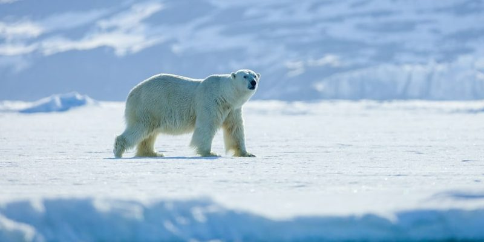
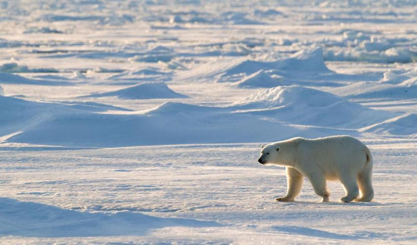

Oso Polar
El oso polar u oso blanco es una especie de mamífero carnívoro de la familia de los osos. Es junto con su pariente, el oso Kodiak, uno de los carnívoros terrestres más grandes de la Tierra. Vive en el medio polar y zonas heladas del hemisferio norte. Es el único superdepredador del Ártico
El oso polar tienen pelaje blanco para que pueda camuflarse en su entorno. Su pelaje está tan bien adaptado para los ambientes árticos que a veces puede confundirse con un montón de nieve. Curiosamente, el pelaje del oso polar no tiene pigmento blanco; de hecho, la piel de un oso polar es negra y sus pelos son huecos.
